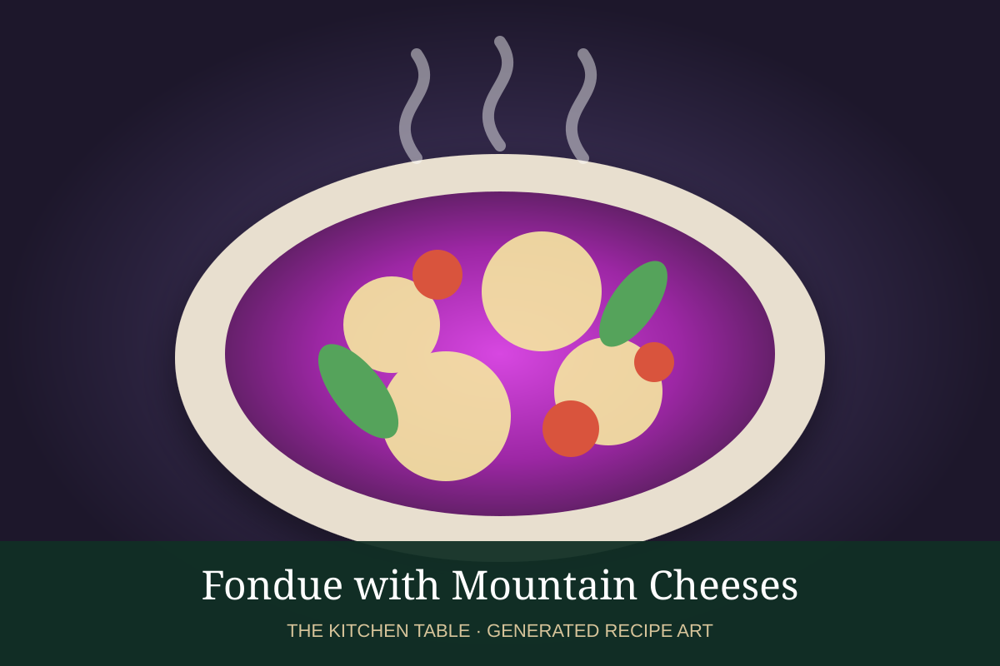

← Back to all recipes
CHEESE · SWISS
Fondue with Mountain Cheeses
A rich alpine fondue blending Gruyère, Vacherin Fribourgeois, and Emmentaler with white wine, garlic, and kirsch.
30 minServes 4

Photo: Wikimedia Commons
Ingredients
- 8 oz Gruyère, grated
- 8 oz Vacherin Fribourgeois, grated
- 4 oz Emmentaler, grated
- 1 garlic clove, halved
- 1¼ cups dry white wine
- 1 tbsp cornstarch
- 2 tbsp kirsch, optional
- Pinch of nutmeg
- Freshly ground black pepper
- 1 crusty baguette, cut into cubes
- Steamed baby potatoes and apple slices, optional
Preparation
- Rub the inside of a fondue pot or heavy saucepan with the cut garlic clove.
- Add the wine and bring to a gentle simmer over medium heat.
- Toss the grated cheeses with cornstarch. Add cheese by the handful, stirring in a figure-eight pattern and allowing each addition to melt before adding more.
- Stir in kirsch, nutmeg, and black pepper. Keep the fondue warm but do not boil.
- Transfer to the fondue burner and serve with bread, potatoes, and apple slices.